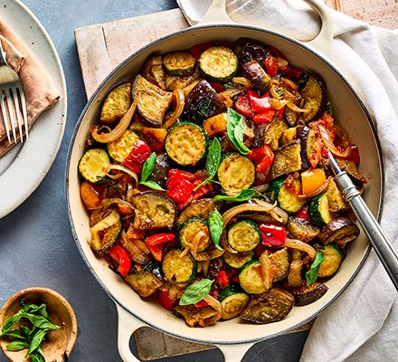
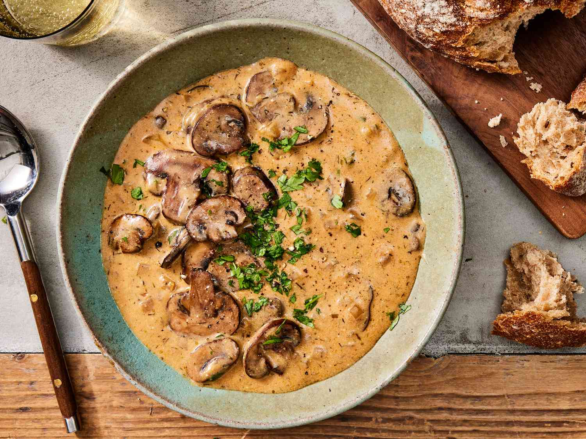

Ratatouille
| For ratatouille | For pepperad sauce |
|---|---|
| Zucchini - 2 pcs. | Bell pepper - 2 pcs. |
| Eggplant - 1 pc. | Tomatoes - 2 pcs. |
| Tomato - 3-4 pcs. | Onion - 1 pc. |
| Olive oil - 2 tbsp. | Garlic - 2 cloves |
| Garlic | Thyme |
| Thyme | Bay leaf |
| Salt - to taste | Basil |
| Pepper - to taste | Salt - to taste |
| Pepper - to taste | |
| Olive oil - 2 tbsp. (for frying) |
Ramen

| For broth |
|---|
| Beef broth - 100 ml |
| Chicken broth - 100 ml |
| Fish broth - 100 ml |
| Raw shrimp shells - 10 pcs. |
| Chicken fillet - 150 g |
| Onion - 30 g |
| Carrot - 20 g |
| Celery root - 20 g |
| Champignon - 1 pc. |
| Wheat noodles - 80 g |
| Egg - 1 pc. |
| Hoisin sauce - 1 tsp |
| Freshly ground coriander |
| Green onion |
| Black sesame |
Mushroom Soup
| For broth |
|---|
| Champignon mushrooms - 250 g |
| Processed cream cheese - 200 g |
| Potatoes - 3 pcs. |
| Onions - 1 pc. |
| Carrots - 1 pc. |
| Vegetable oil - 3 tbsp. spoons |
| Noodles - 50 g |
| Greens - to taste |
| Salt - to taste |
| Ground black pepper - to taste |
Napoleon Cake
| For the dough | For the cream |
|---|---|
| Flour - 2 cups | Milk - 1 cup |
| Chilled margarine - 200 g | Yolk - 2 pcs. |
| Sour cream - 200 g | Sugar - 1 cup |
| Soda - 0.5 tsp | Butter (soft) - 150 g |
| Vinegar 9% - 1 tbsp | |
| Salt - on the tip of a knife |
Risotto with Chicken and Mushrooms
| For the dish |
|---|
| Butter - 2 tbsp |
| Mushrooms, thinly sliced - 220 g |
| Chicken breasts, cut into 1 cm pieces - 300 g |
| Salt - 1 tsp |
| Ground black pepper - ¼ tsp |
| Chicken broth - 5 ½ cups |
| Vegetable oil - 1 tbsp |
| Onions, chopped - ½ cup |
| Arborio rice - 1 ½ cups |
| Dry white wine - ½ cup |
| Grated Parmesan cheese - ½ cup |
| Chopped parsley - 2 tbsp. |